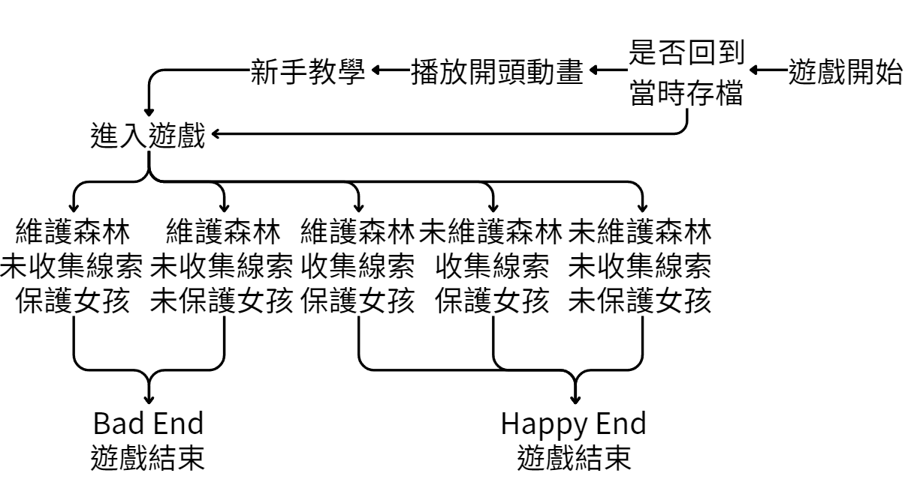
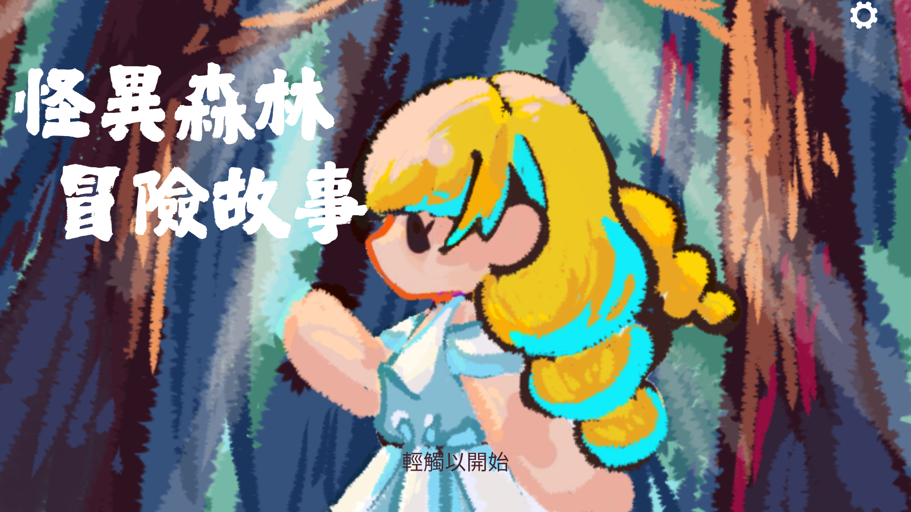
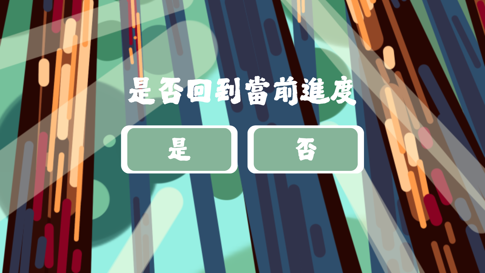
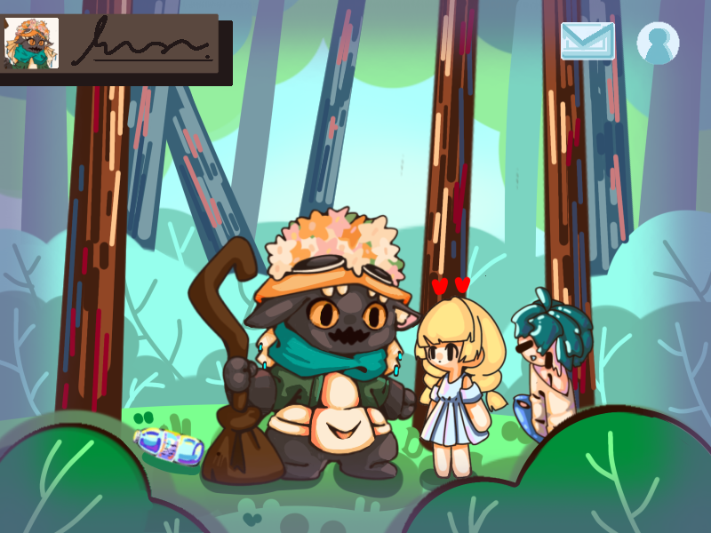
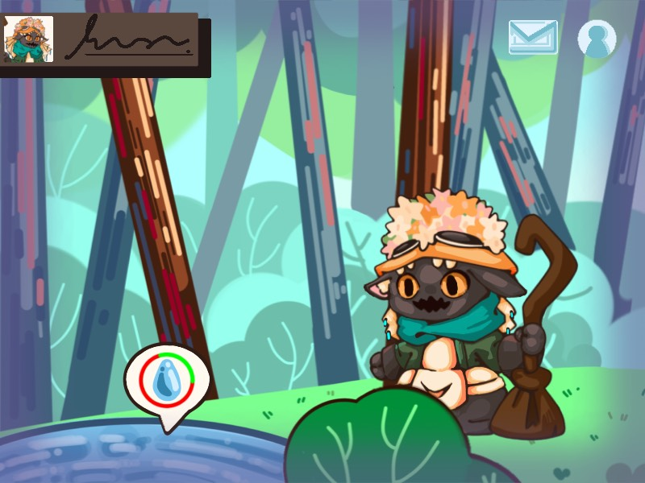
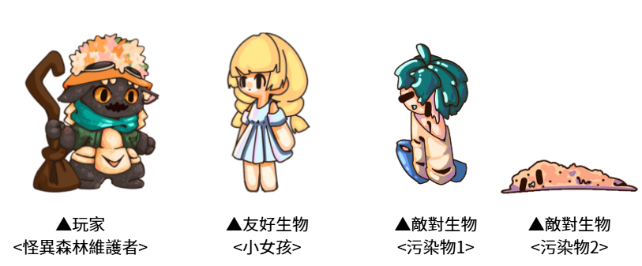
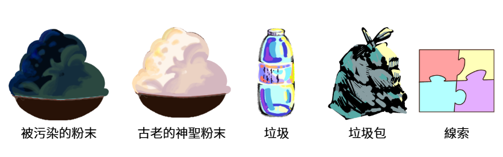
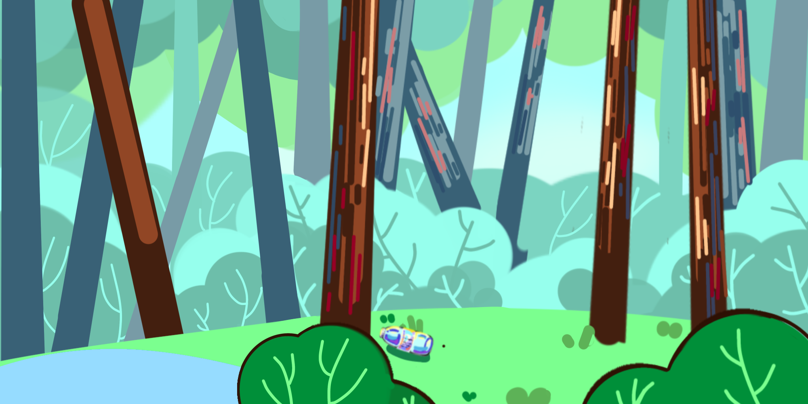
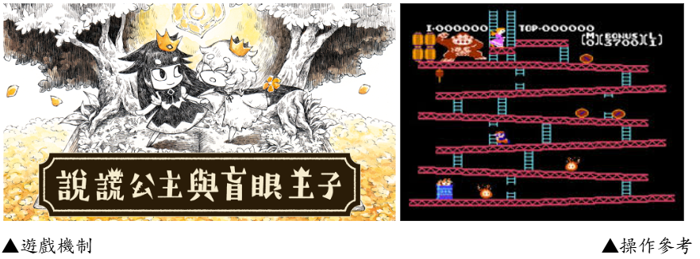

個人專案
| 簡報ppt | 企畫書pdf | 回首頁 |

遊戲介紹
遊戲類型：角色扮演 / 動作冒險 / 解謎 /2d橫向卷軸
遊玩平台：以電腦為主
遊玩方法:搜集垃圾、道具、線索
操作方式:使用滑鼠點擊與方向鍵(WASD)
使用滑鼠點擊或是方向鍵(WASD)來移動角色
跟 NPC 互動可用滑鼠點擊/鍵盤 Z 鍵
使用道具可以使用滑鼠拖曳左邊的貼紙物品欄放到畫面來使用
你是森林孕育出的怪異生物的一員，作為森林最愛的孩子你的工作是維護森林，今天有一個小女孩誤闖森林，由於這裡的時空扭曲導致她認知混亂失去記憶也忘記回去的路，若不能準時在第五天回家她的認知將被永久汙染，從此變成污染物在森林裡徘徊，請於規定的日期內尋找小女孩回家的線索並完成每日的森林維護。
一共分為五天，每天小女孩都要在時間內搶救小女孩和清理垃圾，並在清理垃圾圖中找到線索(小女孩的記憶)讓小女孩回家。








*結局1:未收拾森林且小女孩被怪物殺死
雖然未能保護好小女孩，但由於森林長期沒有護理導致枯竭，故小女孩靈魂已成功離開森林。小女孩的屍體遺留在森林。森林因妳擅離職守逐漸凋零；森林不復存在，你也不需要收拾屍體了。遊戲結束。
*結局2:未收拾森林但小女孩成功離開
小女孩成功離開森林，由於森林長期沒有護理導致枯竭，森林因妳擅離職守逐漸凋零；森林不復存在，你再也不用工作了。遊戲結束。
*結局3:每日收拾森且小女孩成功離開
小女孩成功離開森林，森林因你依舊繁茂；森林依舊深愛著你。遊戲結束。
Bad End
*結局1:每日收拾森林但小女孩被怪物殺死
未能保護好小女孩，森林因你依舊繁盛；小女孩的靈魂也因此永遠困於森林，森林裡又多了一具永久汙染物。；森林依舊深愛著你。遊戲結束。
*結局2:每日收拾森林但小女孩未能離開
未收集完足夠訊息小女孩未能離開森林，森林因你依舊繁盛；你親眼看著小女孩變成污染物，森林裡又多了一具永久汙染物；森林依舊深愛著你。遊戲結束。
